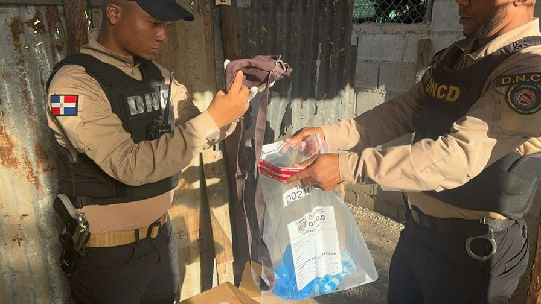

Operativos antidrogas dejan más de medio millón de gramos decomisados

La Dirección Nacional de Control de Drogas (DNCD) informó este sábado que, junto al Ministerio Público, incautó más de 550,000 gramos de distintos narcóticos durante operativos realizados en varias provincias del país a lo largo del mes de noviembre.
Saber mas...